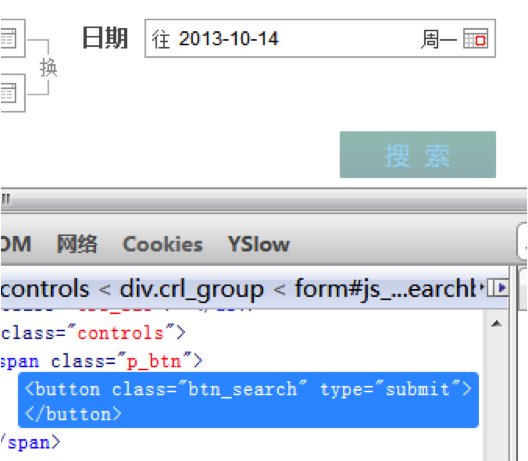
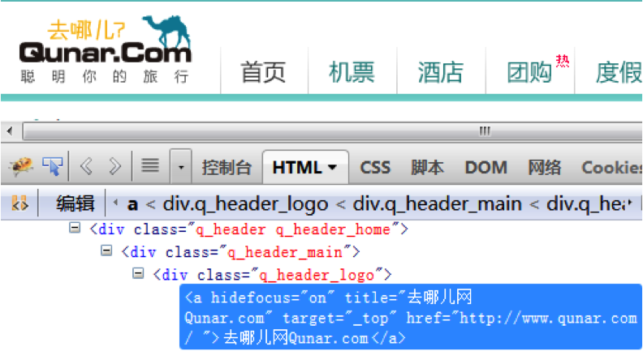
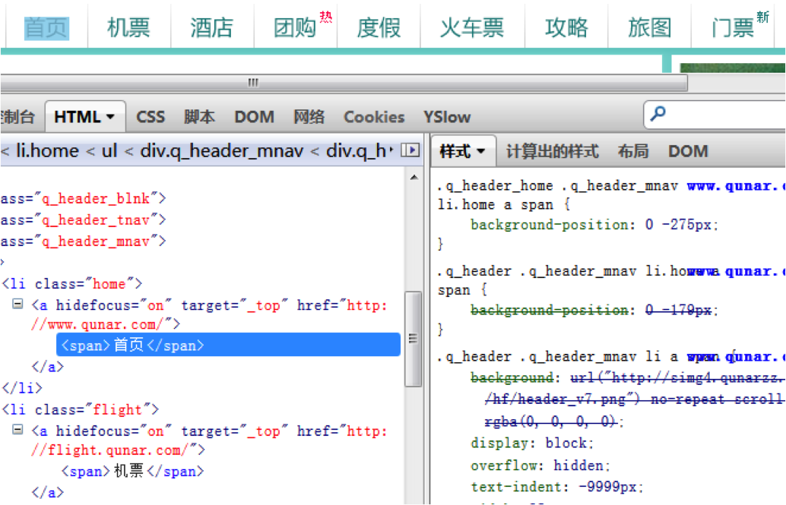
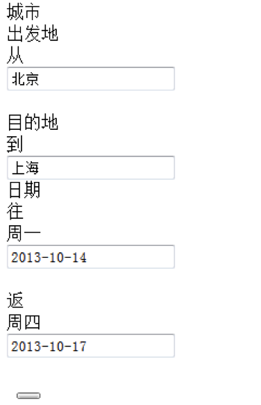

对，大家没看错。在开始今天的话题前，让我们先简单看看什么是无障碍，因为我们今天的话题都是基于打造无障碍的易访问站点而提出的。
小小的背景图与无障碍、易访问也有千丝万缕的密切关系
我记得在所谓的web标准话题兴起之前，大家都钟爱用table布局，因为在那个时候CSS并没有那么流行。所有的图片，不论是装饰性的图片还是内容性的图片，几乎无一例外，都是直接使用前景图。前景图也是web内容的组成部分，这就有问题了，不是么？
而如今，大家用背景图的方式开始有了当年用前景图的味道。
前端几乎把背景图用烂了，别否认，可能你也正在这么做。
可感知性明确了信息和用户界面组件必须以可感知的方式呈现给用户。其中包括：

只有背景图，没有文字。当图片或者样式无法加载，使用盲人阅读器或者纯文本阅读器，我们将无法完成查询操作

样式挂了，或者盲人阅读器，纯文本阅读器，都能正常访问；不过这时图片挂了的话，就毁了，一片空白，啥也没有

web标准化其实是一个范围很广的概念，至于为什么它会驱动背景图大范围使用，原因是：
我们应该至少保证在以下情况，我们的网页仍然是可被友好访问的：

如果需要被感知的地方使用了背景图，需要保证：
这或许会有不少方案，伪对象也是一个思路，只是IE6,7,Balabala...DEMO
更多方案DEMO
很明显，LOGO是网站元素里极为重要的一环，是希望用户既可以看到，又可以听到，还能够读到的内容，所以，这里使用前景图更为合适。
这都不是问题：DEMO
谢 谢!
Thanks For Listening
Q & A